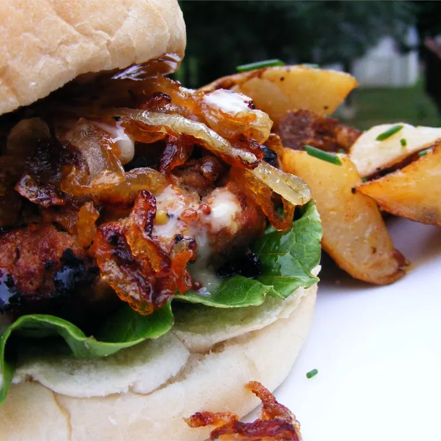

A spicy, flavorful, and moist turkey burger. This is my husband's favorite. It tastes delicious and I make it with extra lean ground turkey breast. The grated onion, barbeque sauce, and Worcestershire sauce add moisture as well as flavor to the turkey.
Step 1
Combine mayonnaise, mustard, honey, horseradish, hot pepper sauce, and cayenne pepper in a bowl. Cover and refrigerate.
Step 2
Mix ground turkey, grated onion, jalapeño, barbeque sauce, Worcestershire sauce, liquid smoke, steak seasoning, and mesquite seasoning in a large bowl. Form into 5 patties.
Step 3
Heat olive oil in a skillet over medium heat. Stir in onion; cook and stir until onion has softened and turned translucent, about 5 minutes. Reduce heat to medium-low, and continue cooking and stirring until onion is very tender and dark brown, 15 to 20 minutes more.
Step 4
Cook patties in a medium skillet over medium heat, turning once, to an internal temperature of 180 degrees F (85 degrees C), about 6 minutes per side. Serve on buns topped with prepared mayo and caramelized onions.